iOS缓存框架－PINCache解读
在项目中总是需要缓存一些网络请求数据以减轻服务器压力，业内也有许多优秀的开源的解决方案。通常的缓存方案都是由内存缓存和磁盘缓存组成的，内存缓存速度快容量小，磁盘缓存容量大速度慢可持久化。常见的内存缓存有NSCache、TMMemoryCache、PINMemoryCache、YYMemoryCache。常见的磁盘缓存有TMDiskCache、PINDiskCache、SDWebImage。这次解读先从PINCache这个优秀的开源项目开始。PINCache项目是在Tumblr 宣布不在维护 TMCache 后，由 Pinterest 维护和改进的基于TMCache的一个内存缓存，修复了TMCache存在的性能和死锁问题，可以说是有了一个较大的提升。
PINCache概论
PINCache是多线程安全的，使用键值对来保存数据。PINCache内部包含了2个类似的对象属性，一个是内存缓存PINMemoryCache，另一个是磁盘缓存PINDiskCache。PINCache本身并没有过多的做处理缓存的具体工作，而是全部交给它内部的2个对象属性来实现，它只是对外提供了一些同步或者异步接口。在iOS中，当App收到内存警告或者进入后台的时候，PINCache能够清理掉所有的内存缓存。
PINCache使用
采用PINCache项目的Demo来说明，这个是从服务器加载数据，再缓存下来，继而做业务逻辑处理，如果下次还需要同样的数据，要是缓存里面还有这个数据的话，那么就不需要再次发起网络请求了，而是直接使用这个数据。PINCache除了可以按键取值、按键存值、按键删值之外，还可以移除某个日期之前的缓存数据、删除所有缓存、限制缓存大小，限制缓存对象的存活时间等。
|
|
PINCache结构
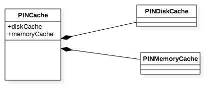
{kind=link}
PINCache的内部结构比较简单，最核心的就是2个缓存实现类，这里先给出一个大概的结构，让大家可以有个了解，下面就来讲讲详细的接口。
PINCache接口
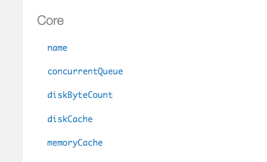
核心属性
1.name是PINCache的名字
2.concurrentQueue是一个用来执行异步任务的并行队列
3.磁盘缓存
4.内存缓存
{kind=link}
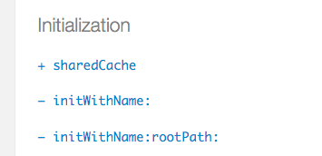
初始化方法
1.单例对象
2.使用名字初始化
3.使用名字和缓存路径来初始化
{kind=link}
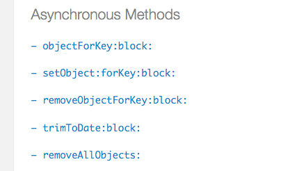
异步方法
多数开源缓存框架的方法也就这么几个，大多类似。
1.异步按键取值，之后执行Block
2.异步按键设值，之后执行Block
3.异步按键删值，之后执行Block
4.异步删除某个时间之后没有使用的缓存，之后执行Block
5.异步删除所有缓存，之后执行Block
{kind=link}
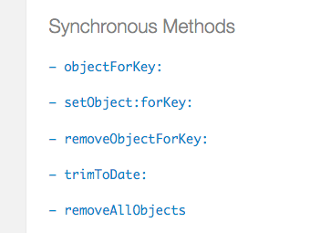
同步方法
这里的同步方法与异步方法的区别除了方法是否立即返回之外，还有一个区别就是异步方法可以传入一个Block参数
1.同步按键取值
2.同步按键设值
3.同步按键删值
4.同步删除某个时间之后没有使用的缓存
5.同步删除所有缓存
{kind=link}
PINCache主要是包装PINDiskCache和PINMemoryCache的功能，具体的功能实现是交给对应的对象去实现。
##PINDiskCache解析
PINDiskCache涉及到磁盘缓存的具体实现，这里就不再一一列举所有的属性和方法了（具体的内容可以查看PINCache的文档），主要挑重要的取值方法，设值方法，还有删除方法来讲。
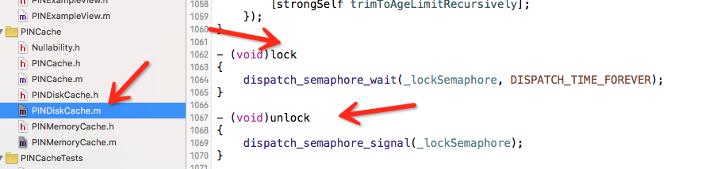
PINDiskCache使用semaphore来做线程同步控制的，在写磁盘缓存的时候给diskCache对象加锁，写完之后解锁。在读磁盘缓存的时候也会给diskCache对象加锁，读完之后解锁。读写过程都会加锁。
{kind=link}
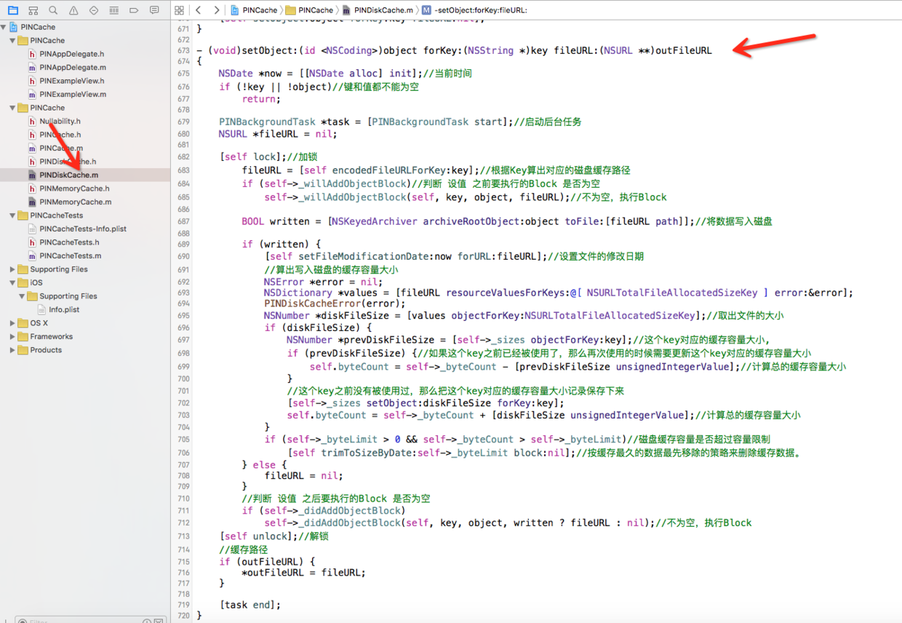
写磁盘缓存的大概步骤是这样的，只是讲解一些思路，具体的详细信息需要大家查看源代码。
1.判断给的键值是否为空
2.加锁，保证多线程安全
3.把数据写入磁盘
4.更新缓存信息（包括但不限于保存磁盘缓存的总容量）
5.判断现在的磁盘缓存容量是否超过容量限制，若超出，按照缓存时间策略来删除对应的缓存，没有超过则不做操作
6.解锁，让其他线程可以进入操作
{kind=link}
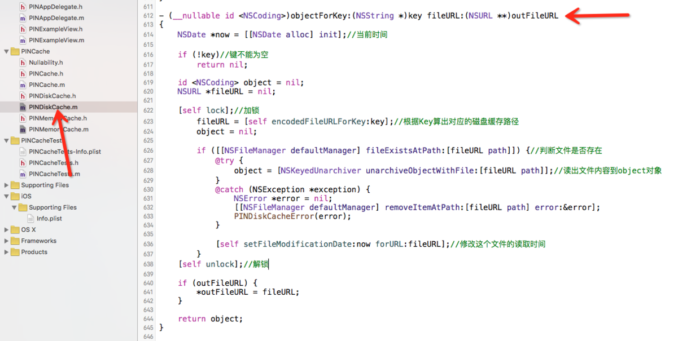
读磁盘缓存相对简单一些，就是找到文件，然后读取。
1.判断给的键是否为空
2.加锁，保证多线程安全
3.把数据从磁盘读到内存对象中
4.解锁，让其他线程可以进入操作
{kind=link}
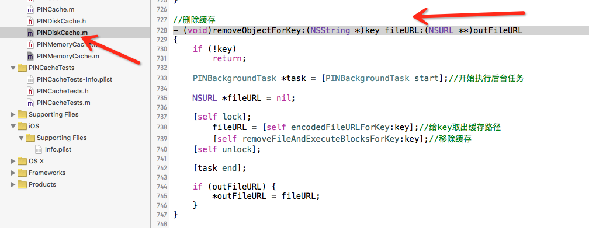
移除缓存就是文件的删除操作
1.判断给的键是否为空
2.加锁，保证多线程安全
3.把文件从磁盘中删除
4.解锁，让其他线程可以进入操作
{kind=link}
PINMemoryCache解析
内存缓存相比磁盘缓存多了一个App收到内存警告或者App进入后台的时候清理缓存的功能。内存缓存的数据保存在字典里面。
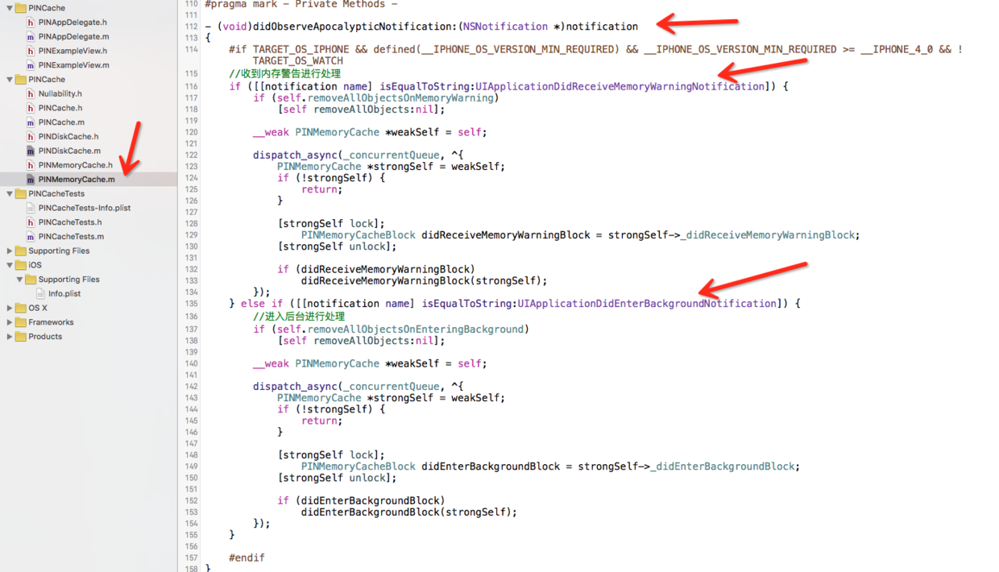
1.收到系统内存警告通知，清理内存缓存
2.收到App进入后台的系统通知,清理内存缓存
{kind=link}
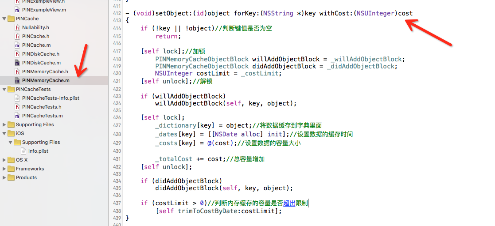
1.判断键值是否为空
2.加锁，保证多线程安全
3.将数据存到缓存池，也就是字典里面
4.更新缓存对应的数据
5.解锁
6.判断内存缓存容量是否超出，超过删除部分
{kind=link}
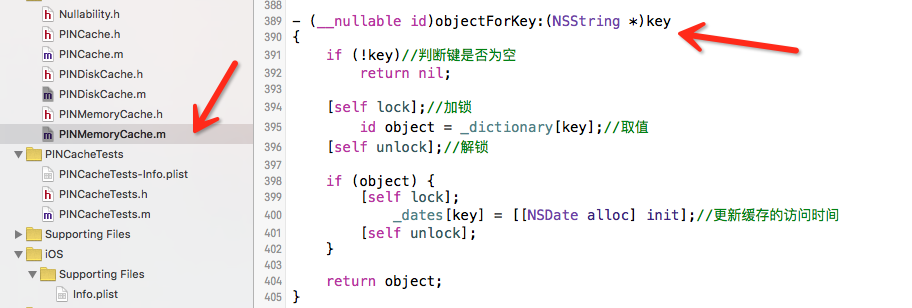
1.判断键值是否为空
2.加锁，保证多线程安全
3.从字典里面取对应值
4.更新缓存对应的数据
5.解锁
{kind=link}
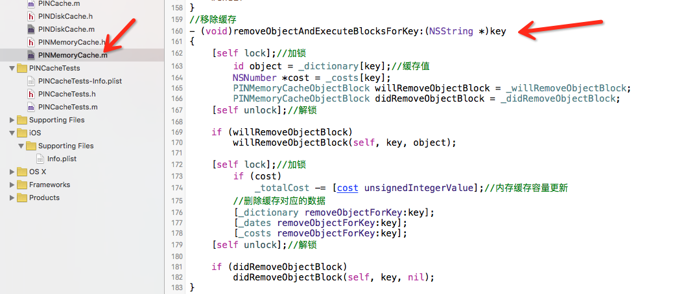
{kind=link}
1.取出内存缓存值
2.加锁
3.更新内存缓存容量
4.删除内存缓存
5.更新内存缓存对应的数据
6.解锁
总结
缓存一般🈶️2个部分组成，一个是内存缓存，一个是磁盘缓存。
1.对于内存缓存来说，一般使用字典来作为数据的缓存池，配合一个保存每个内存缓存数据的缓存时间的字典，一个保存每个内存缓存数据的缓存容量的字典，一个保存内存缓存总容量的变量。对于增删改查操作，基本也都是围绕着字典来的，需要重点注意的就是在这些个操作过程的多线程安全问题，还有同步和异步访问方法，以及异步方法中的Block参数的循环引用问题。
2.对于磁盘缓存来说，使用文件系统来保存缓存数据，配合设置文件的参数，比如文件的修改日期（访问一次即修改一次），文件的大小来管理着这个缓存数据。对缓存数据的增删改查，也就是转化成为对文件的读写删除操作。
3.不管是内存缓存还是磁盘缓存，在删除超过限制容量的缓存的时候总是有一个同样的策略。有优先删除缓存最久，最少使用的策略，也有优先删除，容量最大，最少使用的策略。没有什么最好的策略，只有适合你业务产品的策略。
最后感谢PINCache作者给我们提供了一个优秀的缓存开源框架。
本文章来源于项目内存缓存框架研究，旨在介绍PINCache的一些基本内容。具体的细节需要查看源代码了解。如果你觉得我的这篇文章对你有帮助，请在下方点个赞，让我知道这文章起了作用,谢谢!
参考
iOS 视频剪切、旋转，视频添加音频、添加水印，视频导出
概述
视频处理主要是用到以下这几个类
AVMutableComposition、AVMutableVideoComposition、AVMutableAudioMix、AVMutableVideoCompositionInstruction、AVMutableVideoCompositionLayerInstruction、AVAssetExportSession 等。其中 AVMutableComposition 可以用来操作音频和视频的组合，AVMutableVideoComposition 可以用来对视频进行操作，AVMutableAudioMix 类是给视频添加音频的，AVMutableVideoCompositionInstruction和AVMutableVideoCompositionLayerInstruction 一般都是配合使用，用来给视频添加水印或者旋转视频方向，AVAssetExportSession 是用来进行视频导出操作的。需要值得注意的是当App进入后台之后，会对使用到GPU的代码操作进行限制，会造成崩溃，而视频处理这些功能多数会使用到GPU,所以需要做对应的防错处理。
在这里我会使用Apple的官方Demo “AVSimpleEditoriOS“ 作为讲解案例，该案例采用Command设计模式来组织代码，其中基类的AVSECommand包含了一些各个子类Command共用的属性。本文就视频相关操作做简要介绍，说明一些相关的操作，并标注一些重点代码，希望本文可以起到抛砖引玉的效果,让大家对视频剪辑处理有个初步印象，然后可以根据Apple官方Demo的内容进行相应的修改。大家可以下载相应的Apple官方Demo运行查看结果。
|
|
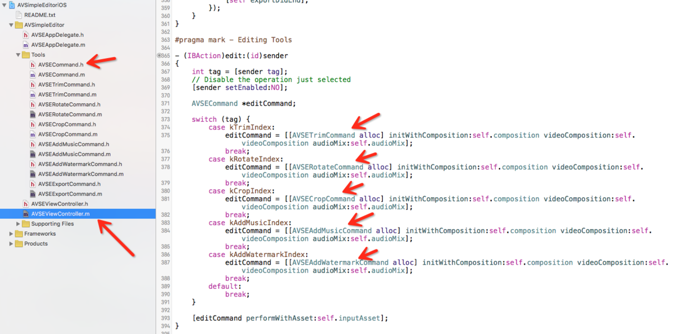
{kind=link}
视频剪切
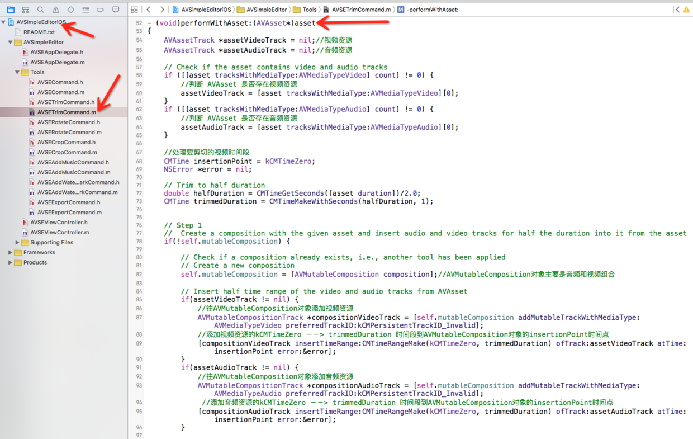
{kind=link}
- 拿到视频和音频资源
- 创建AVMutableComposition对象
- 往AVMutableComposition对象添加视频资源，同时设置视频资源的时间段和插入点
- 往AVMutableComposition对象添加音频资源，同时设置音频资源的时间段和插入点
视频旋转
在查有关视频旋转的资料的时候查看了一篇很不错的参考资料，在这里给大家安利一下
http://blog.csdn.net/likendsl/article/details/7595611 讲的是矩阵运算的原理，对视图的矩阵操作的相关内容。
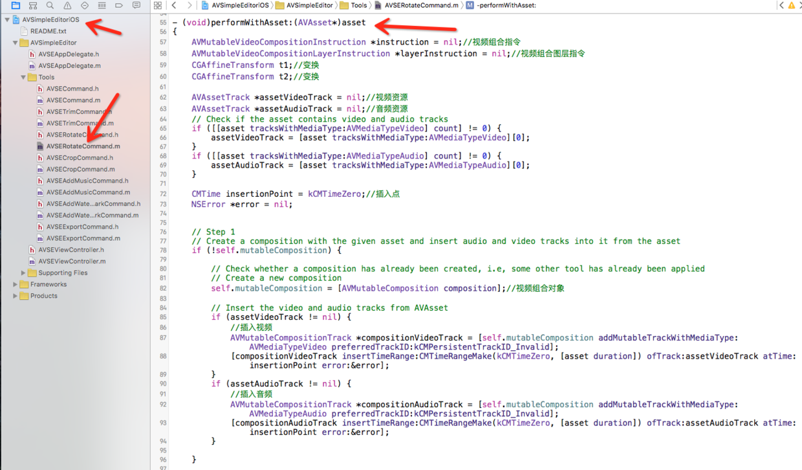
{kind=link}
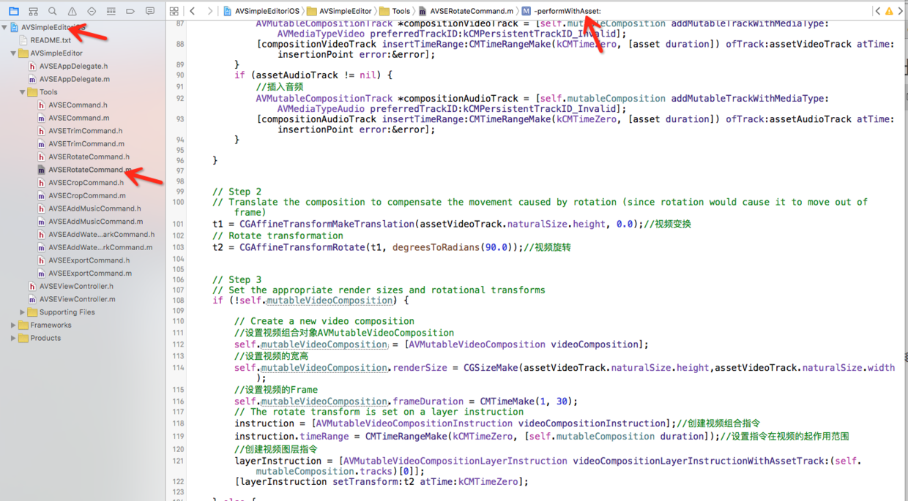
{kind=link}
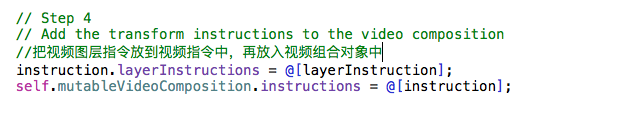
{kind=link}
- 拿到视频和音频资源
- 创建AVMutableComposition对象
- 往AVMutableComposition对象添加视频资源，同时设置视频资源的时间段和插入点
- 往AVMutableComposition对象添加音频资源，同时设置音频资源的时间段和插入点
- 设置旋转矩阵变换
- 创建AVMutableVideoComposition对象
- 设置视频的渲染宽高和Frame
- 创建视频组合指令AVMutableVideoCompositionInstruction，并设置指令在视频的作用时间范围和旋转矩阵变换
- 创建视频组合图层指令AVMutableVideoCompositionLayerInstruction，并设置图层指令在视频的作用时间范围和旋转矩阵变换
- 把视频图层指令放到视频指令中，再放入视频组合对象中
这里给出不同旋转角度的案例代码，希望能够对你起帮助，节省你的时间。
|
|
视频添加音频
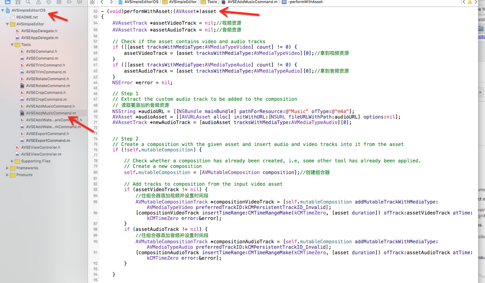
{kind=link}
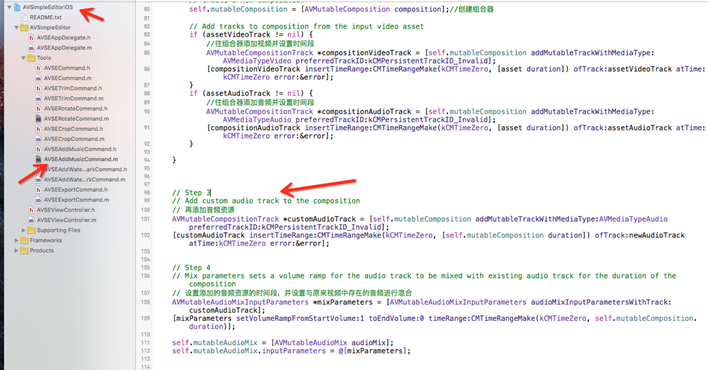
{kind=link}
- 拿到视频和音频资源
- 创建AVMutableComposition对象
- 往AVMutableComposition对象添加视频资源，同时设置视频资源的时间段和插入点
- 往AVMutableComposition对象添加音频资源，同时设置音频资源的时间段和插入点
- 往AVMutableComposition对象添加要追加的音频资源，同时设置音频资源的时间段，插入点和混合模式
视频添加水印
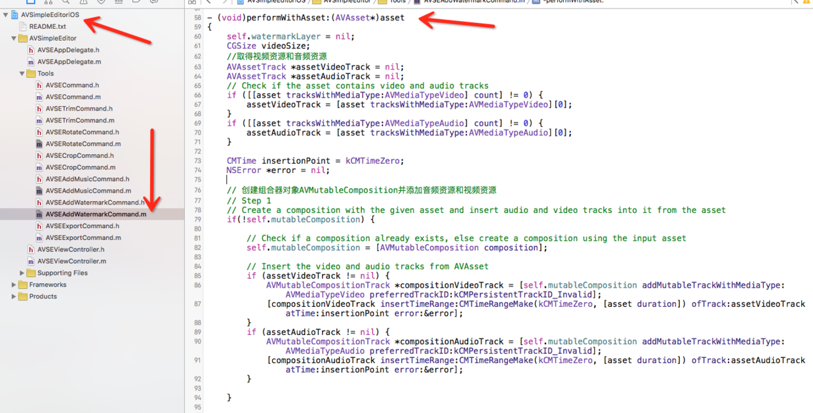
{kind=link}
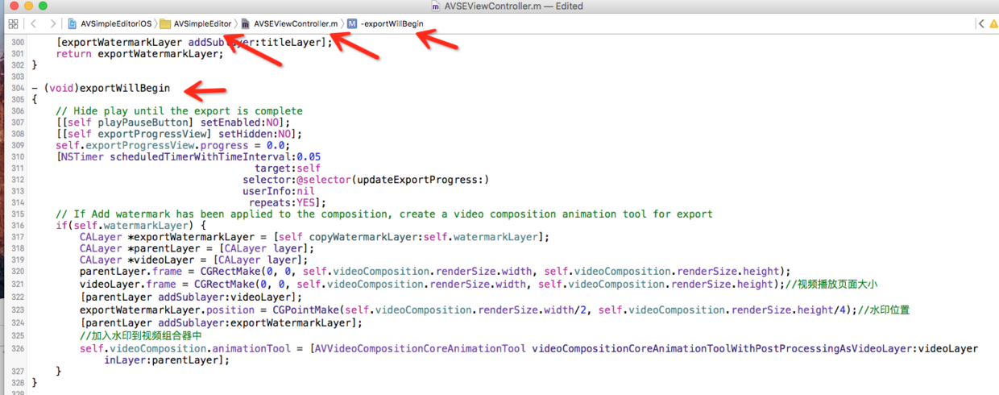
{kind=link}
- 拿到视频和音频资源
- 创建AVMutableComposition对象
- 往AVMutableComposition对象添加视频资源，同时设置视频资源的时间段和插入点
- 往AVMutableComposition对象添加音频资源，同时设置音频资源的时间段和插入点
- 创建视频组合器对象 AVMutableVideoComposition 并设置frame和渲染宽高
- 创建视频组合器指令对象，设置指令的作用范围
- 创建视频组合器图层指令对象，设置指令的作用范围
- 视频组合器图层指令对象 放入 视频组合器指令对象中
- 视频组合器指令对象放入视频组合器对象
- 创建水印图层Layer并设置frame和水印的位置，并将水印加入视频组合器中
视频导出
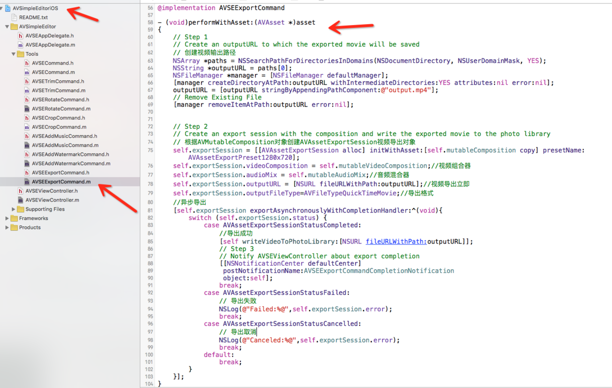
{kind=link}
- 创建输出路径
- 根据AVMutableComposition对象创建AVAssetExportSession视频导出对象
- 设置AVAssetExportSession的AVMutableVideoComposition对象，AVMutableAudioMix对象，视频导出路径，视频导出格式
- 异步导出视频，根据导出结果做对应处理。
参考
iOS图片加载框架－SDWebImage解读
在iOS的图片加载框架中，SDWebImage可谓是占据大半壁江山。它支持从网络中下载且缓存图片，并设置图片到对应的UIImageView控件或者UIButton控件。在项目中使用SDWebImage来管理图片加载相关操作可以极大地提高开发效率，让我们更加专注于业务逻辑实现。
SDWebImage 概论
1.提供了一个UIImageView的category用来加载网络图片并且对网络图片的缓存进行管理
2.采用异步方式来下载网络图片
3.采用异步方式，使用memory＋disk来缓存网络图片，自动管理缓存。
4.支持GIF动画
5.支持WebP格式
6.同一个URL的网络图片不会被重复下载
7.失效的URL不会被无限重试
8.耗时操作都在子线程，确保不会阻塞主线程
9.使用GCD和ARC
10.支持Arm64
SDWebImage 使用
1.使用IImageView+WebCache category来加载UITableView中cell的图片
|
|
2.使用Blocks,采用这个方案可以在网络图片加载过程中得知图片的下载进度和图片加载成功与否
|
|
3.使用SDWebImageManager,SDWebImageManager为UIImageView+WebCache category的实现提供接口。
|
|
4.加载图片还有使用SDWebImageDownloader和SDImageCache方式，但那个并不是我们经常用到的。基本上面所讲的3个方法都能满足需求。
SDWebImage 流程
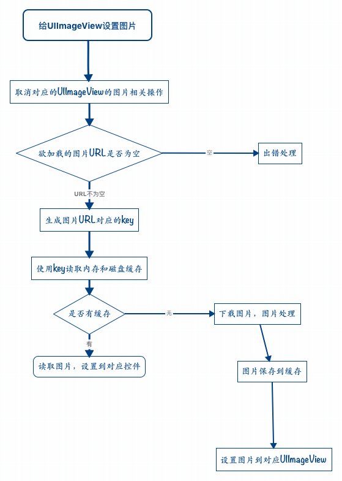
{kind=link}
SDWebImage 接口
SDWebImage是一个成熟而且比较庞大的框架，但是在使用过程中并不需要太多的接口,这算是一种代码封装程度的体现。这里就介绍比较常用的几个接口。
给UIImageView设置图片的接口，SDWebImage有提供多个给UIImageView设置图片的接口，最终所有的接口都会调用下图的这个接口，这是大多数框架的做法。
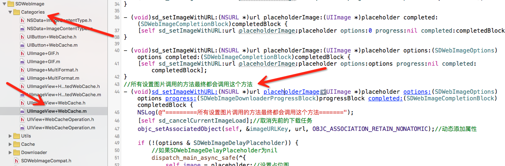
给UIImageView设置图片的接口获取SDWebImage的磁盘缓存大小,在项目中有时候会需要统计应用的磁盘缓存内容大小，那么获取图片的缓存大小就是使用这个接口来实现
[SDImageCache sharedImageCache] getSize];清理内存缓存，清理内存中缓存的图片资源，释放内存资源。
[[SDImageCache sharedImageCache] clearMemory];有了清理内存缓存，自然也有清理磁盘缓存的接口
[[SDImageCache sharedImageCache] clearDisk];
{kind=link}
SDWebImage 解析
解析主要围绕着SDWebImage的图片加载流程来分析，介绍SDWebImage这个框架加载图片过程中的一些处理方法和设计思路。
给UIImageView设置图片，然后SDWebImage调用这个最终的图片加载方法。
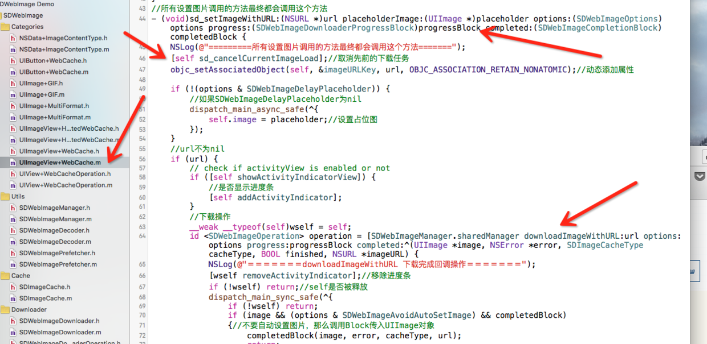
1 给UIImageView设置图片开始加载之前图片先取消对应的UIImageView先前的图片下载操作。试想，如果我们给UIImageView设置了一张新的图片，那么我们还会在意该UIImageVIew先前是要加载哪一张图片么？应该是不在意的吧！那是不是应该尝试把该UIImageView先前的加载图片相关操作给取消掉呢。
[self sd_cancelCurrentImageLoad]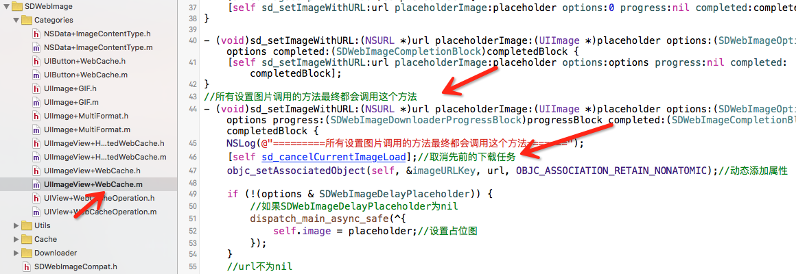
2 取消对应的UIImageView先前的图片下载操作
{kind=link}
{kind=link}
该方法经过周转，最后调用了以下方法，框架将图片对应的下载操作放到UIView的一个自定义字典属性(operationDictionary)中，取消下载操作第一步也是从这个UIView的自定义字典属性(operationDictionary)中取出所有的下载操作，然后依次调用取消方法，最后将取消的操作从(operationDictionary)字典属性中移除。 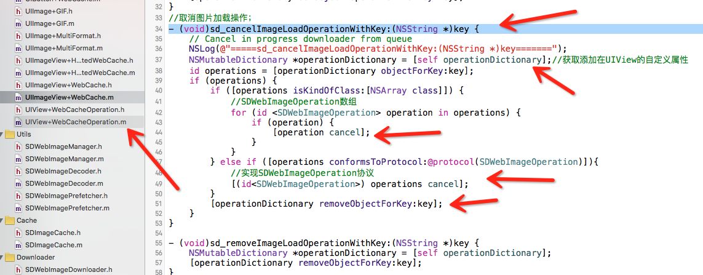
{kind=link}
3.移除之前没用的图片下载操作之后就创建一个新的图片下载操作，然后设置到UIView的一个自定义字典属性(operationDictionary)中。 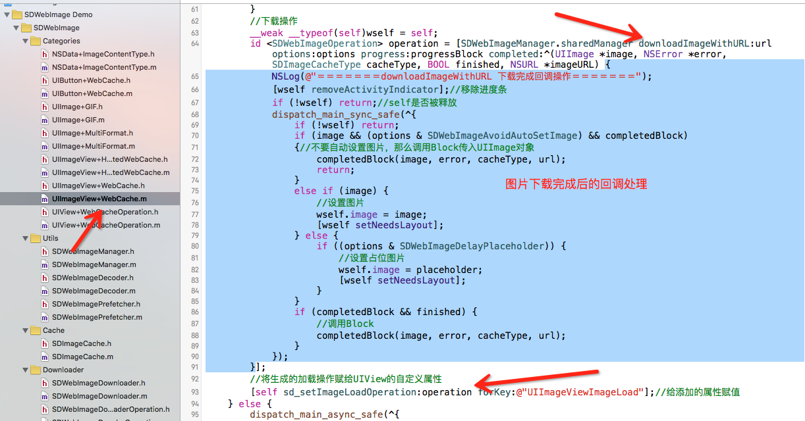
{kind=link}
4.看看如何创建一个新的图片下载操作,框架保存了一个失效的URL列表，如果URL失效了就会被加入这个列表，保证不会重复多次请求失效的URL。
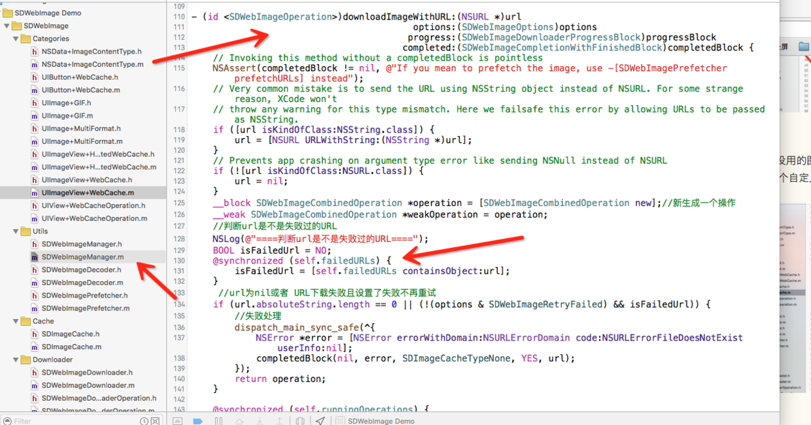
{kind=link}
根据给定的URL生成一个唯一的Key,之后利用这个key到缓存中查找对应的图片缓存。 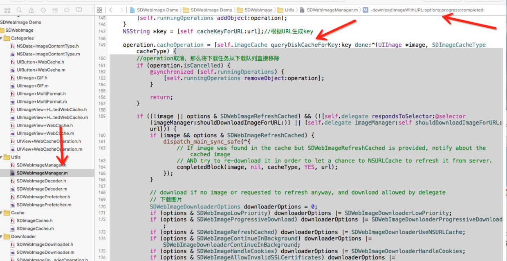
{kind=link}
5.读取图片缓存,根据key先从内存中读取图片缓存，若没有命中内存缓存则读取磁盘缓存，如果磁盘缓存命中，那么将磁盘缓存读到内存中成为内存缓存。如果都没有命中缓存的话，那么就在执行的doneBlock中开始下载图片。
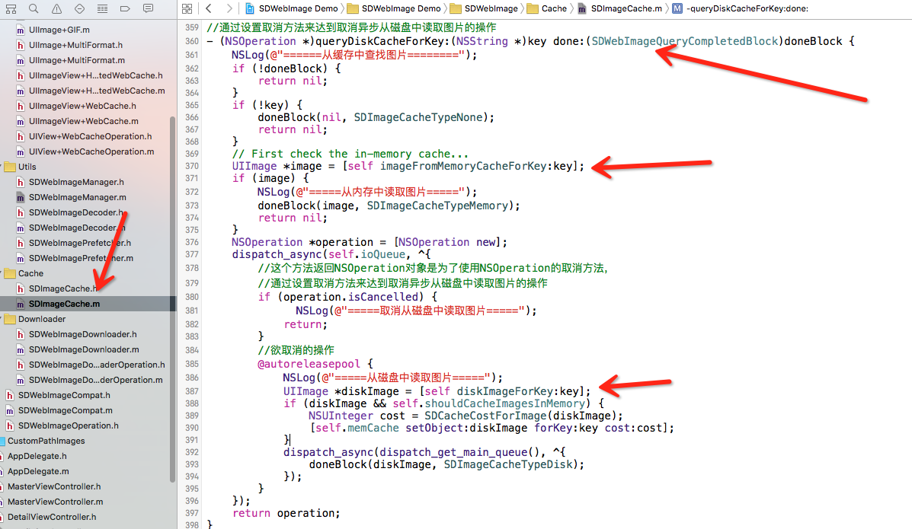
{kind=link}
6.图片下载操作完成后会将图片对应的数据通过completed Block进行回调 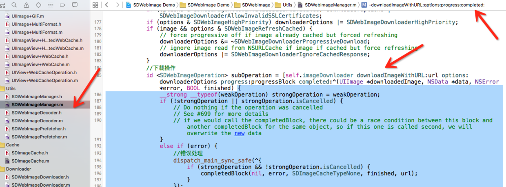
{kind=link}
在图片下载方法中，调用了一个方法用于添加创建和下载过程中的各类Block回调。 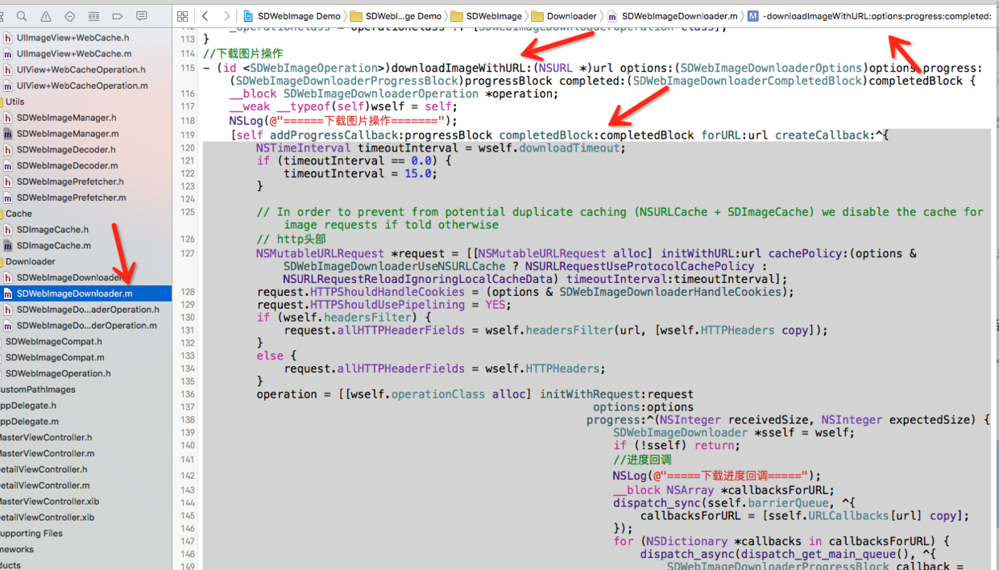
{kind=link}
添加该URL加载过程的状态回调Block 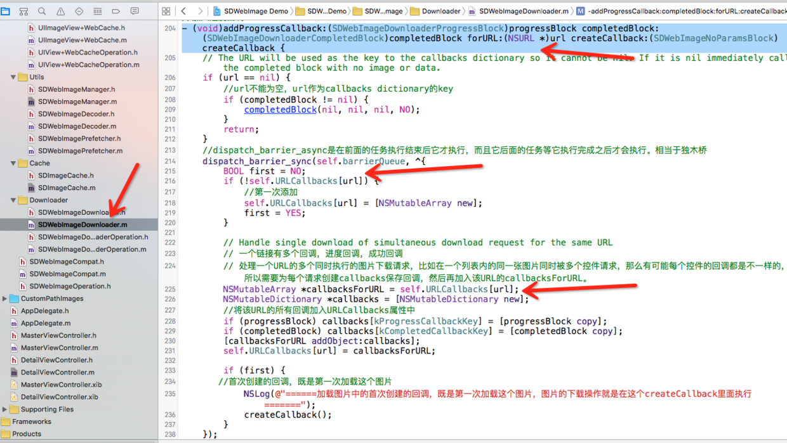
{kind=link}
如果该URL是第一次加载的话，那么就会执行createCallback这个回调Block,然后在createCallback里面开始构建网络请求，在下载过程中执行各类进度Block回调。 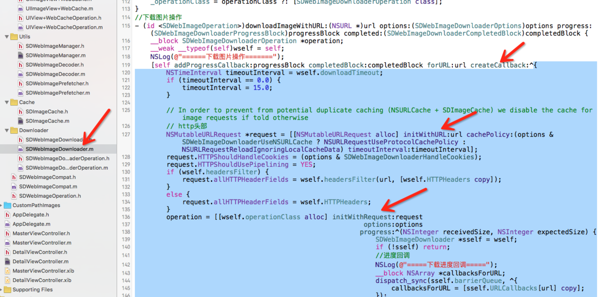
{kind=link}
7.当图片下载完成之后会回到done的Block回调中做图片转换处理和缓存操作 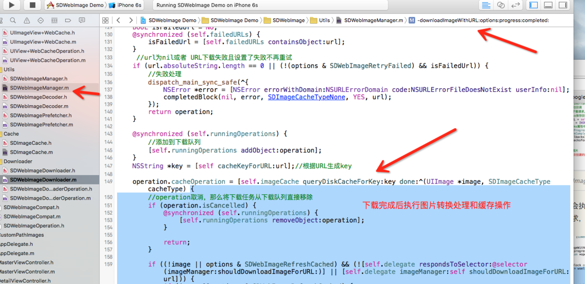
{kind=link}
回到UIImageView控件的设置图片方法Block回调中，给对应的UIImageView设置图片，操作流程到此完成。 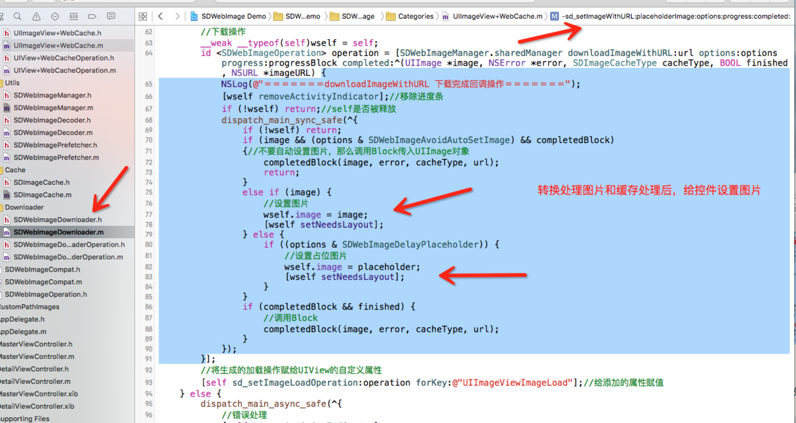
{kind=link}
总结
SDWebImage作为一个优秀的图片加载框架，提供的使用方法和接口对开发者来说非常友好。其内部实现多是采用Block的方式来实现回调，代码阅读起来可能没有那么直观。此文章旨在给大家讲解SDWebImage这个框架的图片大概加载流程，其中具体细节限于篇幅无法详细深究。本人能力有限，文章中难免有错误，若大家在阅读过程中有发现不合理或者错误的地方恳请在评论中指出，我会在第一时间进行修正,不胜感激。
==========================================更新===============
SDWebImage在加载图片网络请求的NSURLConnection的代理中对httpCode 做了判断，当httpCode为304的时候放弃下载，读取缓存。 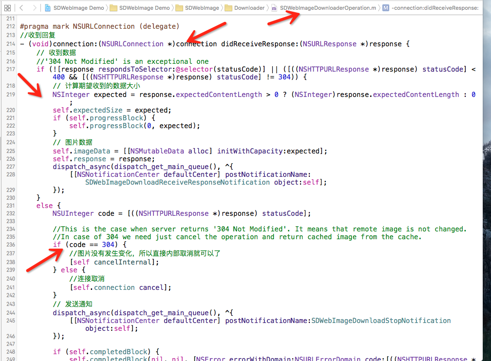
{kind=link}
iOS网络框架－AFNetworking3.1.0源码解读
AFNetworking基本是iOS开发中的网络第三方库标配,本文基于AFNetworking3.1.0版本。废话不多说，这篇文章主要从使用的角度来介绍AFNetworking的发起Get请求的过程，偏重于解读过程，解读当你使用AFNetworking发起一个Get请求的时候，AFNetworking内部的处理过程。而不是对AFNetworking源代码的各个类的代码进行深入解析，在源码深度解析方面，网络上已经有很多不错的文章，在文章的末尾我会给出参考链接。
Get请求流程图
这是AFNetworking发起一个Get请求的流程图，大概可以分为这几个步骤，我会逐个解读这个流程。 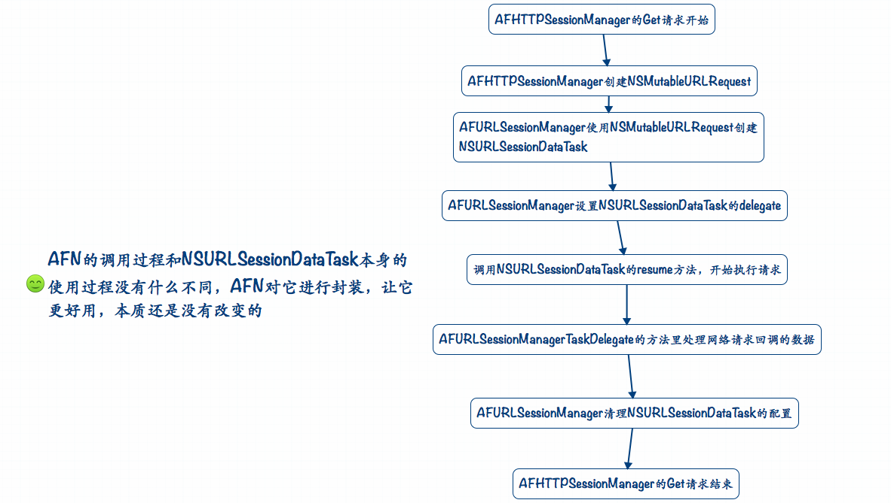
{kind=link}
AFHTTPSessionManager发起Get请求
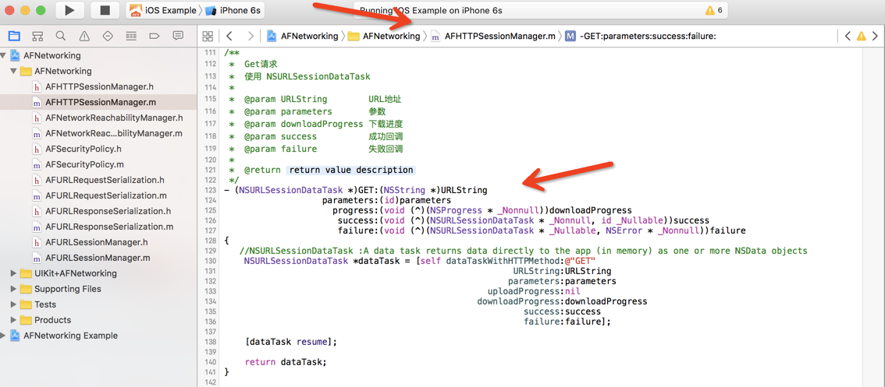
{kind=link}
这个方法是AFN的Get请求的起点，其他Get请求的方法也都是直接或者间接调用这个方法来发起Get请求。这个方法的代码量很少也很直观，就是调用其他方法生成NSURLSessionDataTask对象的实例,然后调用NSURLSessionDataTask的resume方法发起请求。
创建NSURLSessionDataTask
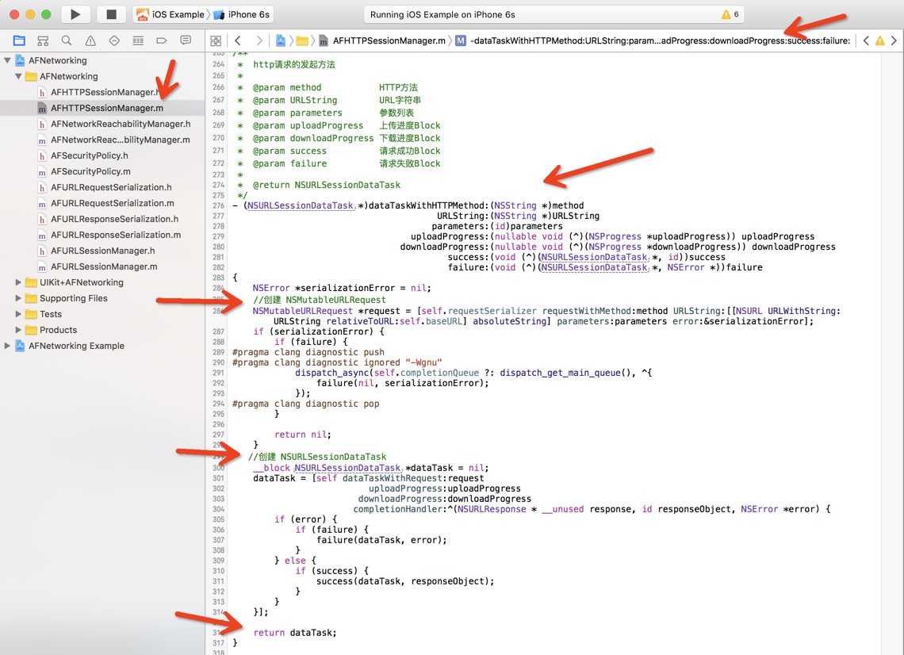
这个方法是创建NSURLSessionDataTask对象实例并返回这个实例。首先创建一个NSMutableURLRequest对象的实例，然后配置。之后是使用NSMutableURLRequest对象的实例创建NSURLSessionDataTask对象实例，然后配置，可以选择性地传入各类Block回调，用于监听网络请求的进度比如上传进度，下载进度，请求成功，请求失败。
{kind=link}
配置NSMutableURLRequest对象
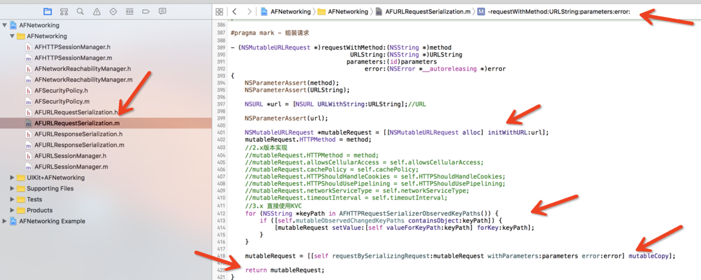
{kind=link}
在这个方法中先使用了url创建了一个NSMutableURLRequest对象的实例,并且设置了HTTPMethod为Get方法（如果是Post方法，那么这里就是设置Post方法，以此类推）然后使用KVC的方法设置了NSMutableURLRequest的一些属性。
|
|
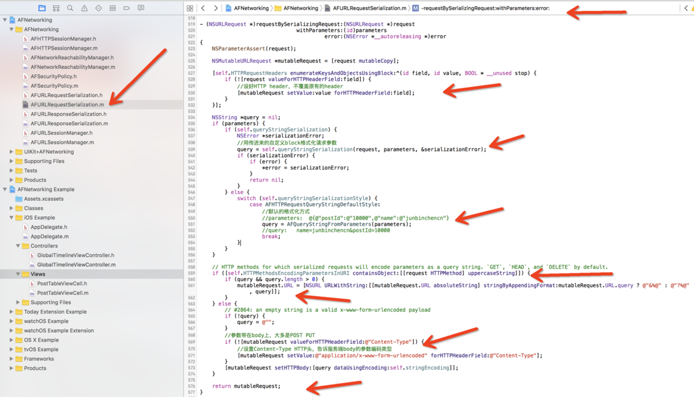
先设置HTTP header，之后格式化请求参数，设置参数的编码类型。这个是这个方法的基本操作流程。对于Get操作来说，参数是直接拼接在请求地址后面。
{kind=link}
配置NSURLSessionDataTask对象
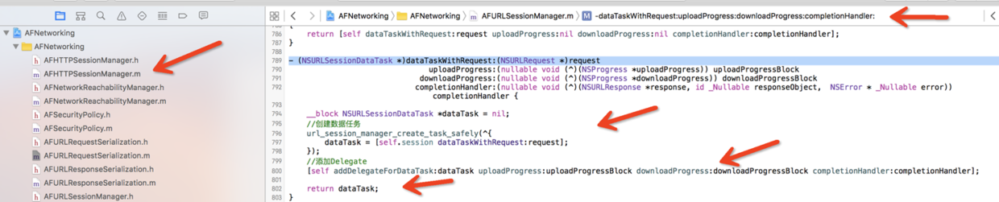
{kind=link}
之后配置NSMutableURLRequest对象就需要配置NSURLSessionDataTask对象了。主要分为2个步骤，第一个步骤是创建NSURLSessionDataTask对象实例，第二个步骤是给NSURLSessionDataTask对象实例设置Delegate。用于实时了解网络请求的过程。
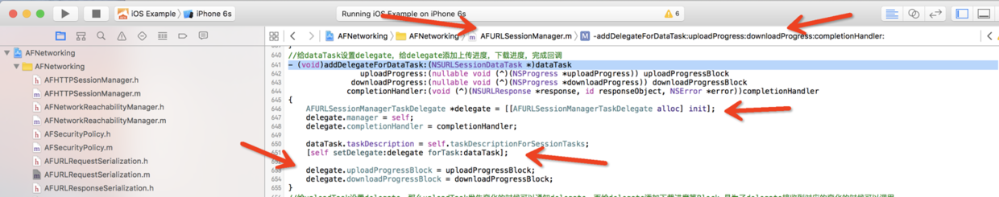
{kind=link}
AFN的代理统一使用AFURLSessionManagerTaskDelegate对象来管理，使用AFURLSessionManagerTaskDelegate对象来接管NSURLSessionTask网络请求过程中的回调，然后再传入AFN内部进行管理。
|
|
如代码所示AFURLSessionManagerTaskDelegate接管了NSURLSessionTaskDelegate, NSURLSessionDataDelegate, NSURLSessionDownloadDelegate的各种回调，然后做内部处理。这也是第三方网络请求框架的重点，让网络请求更加易用，好用。
|
|
通过NSURLSessionTask的taskIdentifier标识符对delegate进行管理，只要是用于识别该NSURLSessionTask的代理，
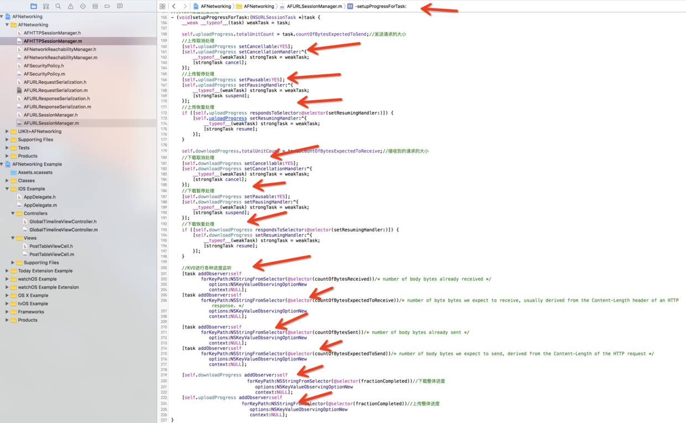
{kind=link}
设置各类回调Block,给NSURLSessionTask使用KVO进行各种过程进度监听。
|
|
监听NSURLSessionTask被挂起和恢复的通知
网络请求开始
|
|
当NSURLSessionTask创建和配置完毕之后，它并不会主动执行，而是需要我们主动调用resume方法，NSURLSessionTask才会开始执行。
网络请求回调
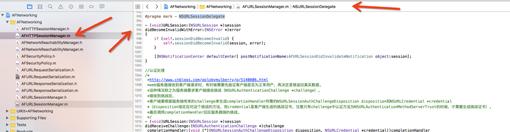
{kind=link}
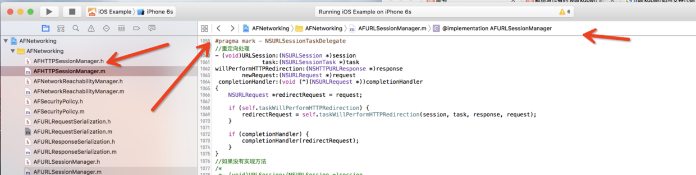
{kind=link}
AFN里面有关NSURLSessionDelegate的回调方法非常的多，这里我们只调和NSURLSessionTask相关的部分方法和KVO处理来进行说明，其他的大家可以参考源码细看。
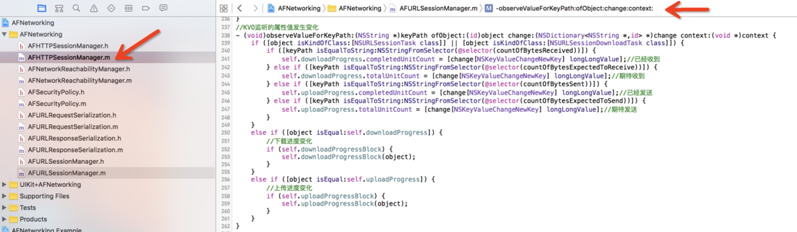
{kind=link}
{kind=link}
{kind=link}
对于我们的Get请求来说，我们最关注的莫过于关注请求过程进度，收到响应数据和请求完成这2个回调。
|
|
|
|
|
|
因为在配置NSURLSessionDataTask对象的时候我们有给NSURLSessionTask做了一系列配置，那么当NSURLSessionDataTask任务完成之后，我们需要将该NSURLSessionDataTask的一系列配置全部清理掉。
这个是我们的配置过程
|
|
那么对应的清理过程是这样的，就是设置过程中做了什么，在清理过程中就需要去掉什么。
|
|
{kind=link}
removeNotificationObserverForTask
{kind=link}
关于Post请求
{kind=link}
|
|
如果是Post请求，那么请求参数是没有拼接在URL上面，而是放在body上，这个是Post和Get请求的最大区别了，其他过程和Get请求并没有太多区别。
关于HTTPS请求
{kind=link}
{kind=link}
|
|
|
|
如果是HTTPS请求的话，那么会先走上面的2个代理方法进行HTTPS认证，之后继续其他操作。
总结
AFN发起Get请求主要分为以下步骤：
1.创建NSURLSessionDataTask
2.配置NSURLSessionDataTask
3.设置NSURLSessionDataTask的Delegate
4.调用NSURLSessionDataTask的resume方法开始请求
5.在Delegate的方法里面处理网络请求的各个过程
6.清理NSURLSessionDataTask的配置
其实也就是使用NSURLSessionDataTask的步骤，AFN在这几个步骤加了一些封装，让整个请求过程更加好用，易用。
对于AFN这类几乎是iOS开发网络库标配的开源项目来说，肯定已经有许多非常优秀的源码解析文章了。所以这篇文章是着重讲解和介绍AFN的整个网络请求的处理流程而且很多的技术细节。相信如果对流程熟悉的话，那么要想找对应的细节处理过程也就比较简单的，再配合一些调试手段的话，基本上对于AFN的细节处理的理解也就不再话下了。由于个人水平有限，文章有不对之处恳请指出，我稍作修改，大家共同进步。如果你觉得我的这篇文章对你有帮助，请在下方点个赞，让我知道这文章起了作用,谢谢!
参考资料
- http://blog.cnbang.net/tech/2320/
- http://blog.cnbang.net/tech/2371/
- http://blog.cnbang.net/tech/2416/
- http://www.ruanyifeng.com/blog/2013/06/rsa_algorithm_part_one.html
- http://www.ruanyifeng.com/blog/2013/07/rsa_algorithm_part_two.html
- http://bugly.qq.com/bbs/forum.php?
- http://www.guokr.com/post/114121/mod=viewthread&tid=417&fromuid=6
- http://www.guokr.com/post/116169/
- http://www.guokr.com/blog/148613/
- http://www.cnblogs.com/hyddd/archive/2009/01/07/1371292.html
- http://www.cnblogs.com/polobymulberry/p/5140806.html
- https://github.com/AFNetworking/AFNetworking/tree/3.1.0
学习困难科目的实用思维方法之理解组块
本文为 Coursera 课程 如何学习：学习困难科目的实用思维方法课程 第二周学习笔记
组块是什么
{kind=link}
从神经科学的角度来讲，组块是一个信息片段。组块的信息可以通过经常使用联系在一起，举个例子，比如吃饭使用筷子夹东西往嘴里送这个过程就是一个组块，这个组块的信息有包括如何用手拿筷子，如何用筷子夹食物，如何用筷子将食物送到嘴边，嘴巴如何张开并接收食物。组块的信息也可以通过实际意义联系在一起，举个例子，比如树的信息就是一个组块，这个组块的信息包括树的高度，树的叶子形状，树的树干分支等。
组块的作用
组块可以被理解成闪烁的神经网络，这个神经网络包含了系列关键的想法，一旦被触发，组块内的信息会源源不断的涌现。这个过程我们可以看成是写作过程中的文思泉涌。这个神经网络也可以包含一系列关键动作，比如篮球运动员的投篮动作，接球–>下蹲–>抬手–>瞄准–>弹跳–>投球。组块是调动记忆内容的捷径。篮球运动员有投篮想法的时候，执行投篮动作不必去思考如何做动作，而是一气呵成。这是因为组块被直接调入工作记忆，大脑指挥身体立即执行组块内的动作。
组块的构建
{kind=link}
组块可以被扩大，也可以被复杂化，但是怎么构建组块呢？
构建组块有以下几个关键步骤：
- 进入专注模式
- 理解基本概念
- 练习内容
- 回忆内容
对以上的内容是不是有种似曾相识的感觉？没错，这个就是比较科学的学习方式。
其中第4个步骤是单纯的回忆。那什么是单纯的回忆呢？和我们平常的回忆有什么不同呢？单纯的回忆就是脱离资料，努力回想关键点。这个是促进组块化的最佳方式之一，可以帮助我们更好的理解资料。在学习这个资料的场所之外可以取得更好的学习效果，因为大脑下意识情况下，会将学习场所和学习的资料进行联系，如果在学习场所之外回忆学习资料，可以减少这个影响。这样会使记忆更加牢固，理解更加深刻，更容易调用这个记忆。
组块的迁移
{kind=link}
我们经常会看到这么一种说法，即使是不同的领域，也有一些互通的内容，在另外一个领域的经验往往可以应用到其他领域。这个互通的概念其实就是组块的迁移。
{kind=link}
你在某个领域掌握的组块 可以帮助你学习另一个领域的组块 两个领域可能具有惊人的共通性 交替学习 选出的各种不同概念 方法与技术 在同一段时间全部加以练习 组块非常重要 但并不意味着能提高灵活性。但是这个交替学习的方式可以培养跳跃性思维，培养创造性想法。比如同一天时间内，你花一部分时间学习文学，花一部分时间学习科学，如此交替学习。
组块的欺骗
{kind=link}
- 你是否真的是在学习？ 我们在学习完一个材料，有时候觉得自己已经完全理解了这个材料了，觉得自己已经学完了这个材料。那么这个时候我们要千万小心，千万不要被自己的错觉欺骗了，误以为我们自己是在学习这个材料，误以为我们自己已经完全理解这个材料了。那要怎么证明自己已经理解了这个材料了，一个简单的方法是用一些小测验来证明自己是否真的掌握了这个材料，也可以采用回忆的方式。
- 你是否记住了标记的内容？ 在学习材料的过程中，会给一些材料的内容进行标记，这会让自己以为记住了那些内容，实际上并没有掌握。那么怎么避免这个缺陷呢？那就是尽量少做标记。
只练习简单的部分你就懂了？只练习简单的部分会给你造成一种错觉，就是你已经全部掌握了这个材料，有意练习困难的部分，可以让你更好的掌握材料。
没有犯错你就会了？学习过程中不要害怕犯错误，犯错误可以让自己察觉到自己对自己能力的评估错觉。
思维定势
{kind=link}
思维定势，是对事物已有的看法 或者说是你已经充分发展巩固了的神经模式这会妨碍你产生更好的想法或者让你不能灵活地接受那些更好或更合适的新方法。那么如何尽量避免思维定势呢？一个比较好的方法是利用组块的迁移 交替学习不同学科的内容，培养创造性思维和跳跃性思维。给你的思维更多的思考方式。
参考
- 如何学习：学习困难科目的实用思维方法课程 第二周
- 文章图示的原图均来自于该 Coursera 课程
学习困难科目的实用思维方法之对抗拖延
本文为 Coursera 课程 如何学习：学习困难科目的实用思维方法课程 第三周学习笔记
为什么喜欢拖延
拖延的原因
当做一件我们不喜欢的事情的时候，会触发我们大脑的痛苦意识，这个时候我们下意识会转而去做令我们愉悦的事情，比如玩手机，玩游戏。但是这样做真的会令我们更加愉悦么？只能说这个是愉悦是暂时的，时间消逝之后，我们的痛苦会加倍，因为我们需要做的事情没有完成。拖延就像是温水煮青蛙，每天都拖延，每天的水都在慢慢加热，等到水开了之后，我们发现自己的拖延症已经晚期了。
{kind=link}
有一种模式叫做僵尸模式
僵尸模式就是一种惯性，也就是习惯。比如刚开始学倒车的时候，你会觉得非常难。但是当你学会了之后，倒车这件事则变得非常简单。因为你开始学习倒车的时候相对紧张，你面对着各种各样的复杂信息，觉得这项任务变得异常艰巨。但是，一旦你学会了之后，也就是倒车这个行为在你的大脑里面形成了组块。你只需要触发这个倒车的想法，你的大脑就会进入僵尸模式，它只处理关键信息，不会因为要全面兼顾而力不从心。
习惯可以分为4个阶段。
- 第一个阶段是信号（cue），这个是进入僵尸模式的触发器。这个信号可能是一个微信消息，一个电话。信号没有好坏之分，重要的是我们接受信号之后的反应。
- 第二个阶段是惯性（routine），也就是僵尸模式，你的大脑在接受到信号之后做出的习惯性反应。
- 第三个阶段是奖励（reward）,任何一种习惯得以养成都是因为它们可以回报我们，它会立即带给我们愉悦感。拖延是极易产生的习惯，因为你将关注点转向了更令人愉悦的事情后所带来的奖励更加迅速而简单。但是好习惯也是有奖励的，想办法奖励好习惯有助于养成习惯。
- 第四个阶段是信念，坚信习惯，习惯就会强大起来。
关注过程而不是结果
{kind=link}
当你开始学习新东西的时候总是会有一些负面情绪，甚至是你喜欢的东西也是会这样的。对于这些负面情绪，不同的处理方式会带来不同的效果。研究者们发现，不拖延的人会把负面情绪放到一边并对自己说，别浪费时间了，马上动工。 一旦你开始了，就会感觉好多了。注重过程而不是结果是一个非常好的方法。即学会把注意力集中在过程而不是结果上，过程就是指流动的时间，以及这段时间里的习惯和行动。比如 我要花60分钟来工作，而结果是工作产出。专注于过程的最简单方法就是把注意力集中在一个番茄工作周期，即25分钟的时间片段上，而不是完成某一项任务上。这里的基本思想在于你大脑中的僵尸习惯部分喜欢过程，因为它能够毫不费力的前进，要让友好的僵尸习惯来帮助过程的进行，这样做出结果就比较简单了。专注于过程而不是结果 ，你便不会总是去想还有多久才能做完，从而使自己在工作或者学习的过程中放松下来。
你想要对抗拖延的方法
- 写下本周重要任务列表。
- 在前一晚写下第二天的每日任务，研究表明，这可以让你在潜意识下设法解决任务，从而找到完成方法 。睡前写好任务清单，征召僵尸，帮助你完成第二天列表里的项目。 如果不把任务写下来 它们就会潜伏在四个工作记忆插槽的边缘，在寸土寸金的工作记忆区里尸位素餐，但将任务写到纸上，工作记忆就可以用来想别的事情了 。
- 将任务划分成小块任务，使用番茄工作法工作。确保完成任务后，你和你的僵尸可以得到奖励，完成任务后细细品味你的成功和喜悦，放大你的愉悦感。
4.时刻留意并记录触发你进入拖延模式的信号，尽量避免这些信号的干扰。比如手机消息会使你进入拖延模式，那么是否可以将你的手机收起来，或者不带在身上。
5.信任你的体系。在一个番茄时间内集中精力做好工作或者学习，在完成任务后毫无负罪感地尽情放松。
6.当你依旧拖延的时候，采用B计划，慢慢实践新体系。
7.每天先做你最不喜欢的工作。
参考
- 如何学习：学习困难科目的实用思维方法课程 第三周
- 文章图示的原图均来自于该 Coursera 课程
学习困难科目的实用思维方法之认识大脑
本文为 Coursera 课程 如何学习：学习困难科目的实用思维方法课程 第一周学习笔记
专注模式和发散模式
人类有2种截然不同的思维方式，一种称作专注模式，另一种称作发散模式。以弹珠游戏做比喻来认识这2种模式。
弹珠游戏
弹珠游戏的玩法是 你按下按钮 然后松手 一颗弹珠就会弹出来 在橡胶缓冲器之间弹跳 然后你就可以得分。
{kind=link}
{kind=link}
左边的图类似于专注模式。蓝色的缓冲器放得很密集，一个挨着一个。 它代表着已熟知的思维模式。包括一些简单的 数学或者生活知识。当你想到一个点子 ，它就会像弹珠一样”嘭”的一声发射出来然后平缓的向前移动，随着它在缓冲器之间弹跳，你可以找到解决问题的思路，明白你试图理解的观念。这些都是与你之前较熟悉的事物有联系的 ，你清楚的知道你的思路相当顺畅。
右边的图类似于发散模式。你正在思考的问题需要新的解决办法，需要一些你从未想到过的概念，那么这个时候你就需要发散模式。这些橡胶缓冲器之间有非常大的空间，想法蹦出来以后，可以看到它运动区域很大，跳来跳去，在被缓冲器撞到而停止之前，它可以弹跳很长一段距离。 在这个发散的思维模式下，你会从另一个角度看待事物，随着这个想法在新通道间穿梭，你便可以建立起新的神经连接，你不能像以前那样专注于落实某个问题的解决方法或者理解某个概念中最细微的方面 ，但是你至少可以找到一个解决问题的出发点。运动有助于进入发散模式，可以在办公之余走动走动，下班后多运动可以提高思维发散能力。
就目前神经学家所知，专注模式与发散模式只能单独存在， 你不能同时使用两种模式。 这有点像一枚硬币 我们一次只能看到它的其中一面，但是却不能同时看到两面。 在一个模式中思考，看上去限制了你转换另外一个思维模式的通道。
工作记忆和长期记忆
{kind=link}
工作记忆是你的大脑在即时且有意识地处理信息时所涉及的那部分记忆，是短期记忆。当我尝试将脑海中的一些想法结合起来，去帮助我理解某一概念或解决某一问题时，我动用的则是工作记忆。研究人员发现我们的工作记忆只能储存大约四个组块的信息，我们会自动将记忆项合并为组块的形式。工作记忆就像一块黑板，但这块黑板却不太理想，你必须时常重复所要记忆的内容，以使它们稳定地储存在工作记忆中（如果不这样做，记忆就会被图中的吸血鬼吸走）。比如我们背诵课文需要反复朗读，直到我们能背诵下来。
{kind=link}
长期记忆就像一个储存仓库，与仓库类似，它分布在一个很大的区域中，不同的长期记忆储存在大脑的不同区域。研究表明当你首次尝试将一段短期记忆转入长期记忆中时你需要多次回顾以增加需要时能够找到相关信息的几率，长期记忆的仓库是巨大的，它可以储存数以亿计的内容。
{kind=link}
工作记忆转为长期记忆将需要一些时间和练习的过程。要促进这一过程有种技巧叫作间隔重复，具体做法是不断重复你尝试记忆的内容 ，但重复的过程必须间隔开来， 比如在几天内重复记忆一个新单词 。
睡眠的意义
{kind=link}
绝对地清醒会让你的大脑产生有毒的物质，大脑如何除掉这些有毒物质呢？ 原来当人们在睡觉的时候大脑细胞会收缩这样会增加脑内细胞之间的距离，这就像疏通了一条溪流 ，液体会在细胞空隙间流过冲走有毒的物质 所以睡觉这件事有时候看起来像是浪费时间实际上是大脑保持清洁和健康的一种方式 。
{kind=link}
睡眠还是记忆力和学习过程中很重要的一部分。这就好像你在睡觉的时候你的大脑会将你学习和思考过的想法和概念进行整理，它会清除掉一些记忆中不太重要的部分，同时增强你需要或想要记住的区域的记忆。在睡梦中你的大脑也 将你所努力学习到的东西在神经中枢一遍遍排演以增强加深记忆力。 研究表明睡眠对人们找出困难问题的能力和理解所学知识的能力有显著影响。
参考
如何学习：学习困难科目的实用思维方法课程 第一周
文章图示的原图均来自于该 Coursera 课程
iOS GIF 动画加载框架 - FLAnimatedImage 解读
FLAnimatedImage 是由Flipboard开源的iOS平台上播放GIF动画的一个优秀解决方案，在内存占用和播放体验都有不错的表现。
本文章主要是介绍FLAnimatedImage框架的GIF动画加载和播放流程，旨在说明流程和主要细节点，大家可以参考流程进行源码解读并调试，相信可以得到大量有用信息。
文章不免有不足或者错误之处，请大家在下方评论指出，我会尽快修正，若是觉得文章还不错，请点个赞，鼓励我继续写作，l-(>-<)-l 。
FLAnimatedImage简单流程图
FLAnimatedImage项目的流程比较简单，FLAnimatedImage就是负责GIF数据的处理，然后提供给FLAnimatedImageView一个UIImage对象。FLAnimatedImageView拿到UIImage对象显示出来就可以了。
FLAnimatedImage简单流程图
{kind=link}
FLAnimatedImage使用
使用FLAnimatedImage处理GIF动画数据，使用FLAnimatedImageView展示FLAnimatedImage处理后的动画数据。
使用NSData初始化FLAnimatedImage,然后将FLAnimatedImage赋值给FLAnimatedImageView
1234567891011if (!self.imageView1) {self.imageView1 = [[FLAnimatedImageView alloc] init];self.imageView1.contentMode = UIViewContentModeScaleAspectFill;self.imageView1.clipsToBounds = YES;}[self.view addSubview:self.imageView1];self.imageView1.frame = CGRectMake(0.0, 120.0, self.view.bounds.size.width, 447.0);NSURL *url1 = [[NSBundle mainBundle] URLForResource:@"rock" withExtension:@"gif"];NSData *data1 = [NSData dataWithContentsOfURL:url1];FLAnimatedImage *animatedImage1 = [FLAnimatedImage animatedImageWithGIFData:data1];self.imageView1.animatedImage = animatedImage1;使用URL初始化FLAnimatedImage，然后将FLAnimatedImage赋值给FLAnimatedImageView
123456789101112if (!self.imageView2) {self.imageView2 = [[FLAnimatedImageView alloc] init];self.imageView2.contentMode = UIViewContentModeScaleAspectFill;self.imageView2.clipsToBounds = YES;}[self.view addSubview:self.imageView2];self.imageView2.frame = CGRectMake(0.0, 577.0, 379.0, 447.0);NSURL *url2 = [NSURL URLWithString:@"https://cloud.githubusercontent.com/assets/1567433/10417835/1c97e436-7052-11e5-8fb5-69373072a5a0.gif"];[self loadAnimatedImageWithURL:url2 completion:^(FLAnimatedImage *animatedImage) {self.imageView2.animatedImage = animatedImage;}];
FLAnimatedImage项目代码结构
FLAnimatedImage项目采用了“生产者和消费者”模型来处理这个GIF动画的播放问题。一个线程负责生产数据，另一个线程负责消费数据。生产者FLAnimatedImage负责提供帧UIImage对象，消费者FLAnimatedImageView负责显示该UIImage对象。
FLAnimatedImage代码结构
{kind=link}
FLAnimatedImage接口
|
|
FLAnimatedImage解析
- 关键方法 初始化解析
a、对传进来的数据进行合法性判断，至少不能为nil。
b、初始化对应的变量，用于存储各类辅助数据。
c、将传进来的数据处理成图片数据，其中设置。kCGImageSourceShouldCache为NO,可以避免系统对图片进行缓存。
d、从数据中读取图片类型，判断该图片是不是GIF动画类型。
e、读取GIF动画中的动画信息，包括动画循环次数，有几帧图片等。
f、遍历GIF动画中的所有帧图片，取出并保存帧图片的播放信息，设置GIF动画的封面帧图片
g、根据设置或者GIF动画的占用内存大小，与缓存策略对比，确认缓存策略。
|
|
- 关键方法 取UIImage对象
a、对索引位置进行判断，避免出现越界情况
b、记录当前取出的帧图片的索引位置
c、根据缓存策略判断接下来需要生产的帧图片索引，正常是当前显示帧图片之后的帧图片的索引。
d、根据需要生产的帧图片索引生产帧图片
e、取出对应的帧图片
f、根据缓存策略清缓存
|
|
- 其他关键方法简单介绍
|
|
FLAnimatedImageView接口
|
|
FLAnimatedImageView解析
- 关键方法 设置FLAnimatedImage对象解析
a、判断新旧FLAnimatedImage对象是否一致，一致就不需要继续操作了
b、设置GIF动画的封面帧图片，当前帧索引，GIF动画的循环播放次数，播放时间累加器
c、更新是否发起动画的标志位，判断是否启动GIF动画
d、刷新View的layer
|
|
- 关键方法 设置CADisplayLink的frameInterval
|
|
- 关键方法 播放GIF动画
该方法关键点在于accumulator累加器的使用和displayLink.frameInterval的计算，涉及一些简单的数学过程
|
|
总结
- FLAnimatedImage就是负责生产数据是生产者。
- FLAnimatedImageView负责消费数据是消费者。
参考
- https://developer.apple.com/library/ios/documentation/QuartzCore/Reference/CADisplayLink_ClassRef/
- http://engineering.flipboard.com/2014/05/animated-gif/
- https://github.com/Flipboard/FLAnimatedImage
- http://blog.ibireme.com/2015/11/02/ios_image_tips/
- http://blog.ibireme.com/2015/11/02/mobile_image_benchmark/
iOS 模型框架 - Mantle 解读
Mantle 是由 Github 开发一款模型框架，Mantle 的主要作用在于让开发者更简单的构建应用的 model 层。本文主要介绍 Mantle 中最常使用的 JSON 功能–字典转模型。
Mantle 的使用
先以知乎的一个 API 为例，讲解如何使用 Mantle 为这个 API 构建 model 。
{kind=link}
- 按照 Mantle 要求构建对应的 model
（ Mantle 要求所有的 Model 都要继承于 MTLModel 并实现 MTLJSONSerializing 协议）
构建 ZhihuLatestNews model 对应返回的 JSONKeyPath
ZhihuLatestNews.h
ZhihuLatestNews.m
{kind=link}
{kind=link}
构建 ZhihuStory model 对应 sotries 的JSONkeyPath
ZhihuStory.h
ZhihuStory.m
{kind=link}
{kind=link}
构建 ZhihuStory model 对应 top_sotries 的JSONkeyPath
ZhihuTopStory.h
ZhihuTopStory.m
{kind=link}
{kind=link}
2.将网络请求的结果使用 Manlte 转化成 model
{kind=link}
Mantle的接口
Mantle 通过 MTLJSONAdapter 实现 字典和 model 之间的转化
|
|
Mantle的核心操作步骤
1.获取 model 的属性–> JSONKeyPath 映射字典
2.获取 model 的属性列表
3.根据 model 的方法给网络请求中返回的 JSON 字典中的 value 做值类型转化操作
4.使用 KVC 把值赋给 model 的属性，完成操作
Mantle 的 JSON字典–> model 方法调用层级,Mantle 源码解读过程中主要是参考这个调用过程
|
|
Mantle的源码解读
1.初始化 MTLJSONAdapter
MTLJSONAdapter 是 字典和 model 之间的适配器，将 JSON 字典 转成应用的 model 对象
方法定义
{kind=link}
|
|
2.initWithModelClass:(Class)modelClass 的作用是使用给定的 modelClass 初始化 MTLJSONAdapter
{kind=link}
|
|
3.MTLModel的propertyKeys类方法,该方法会返回一个包含 model 属性列表的 NSSet 数据，但是这个 NSSet 数据不包含 被 readonly 修饰的属性，没有 ivars 变量的属性，以及 MTLModel 类自身的属性。除此之外的所有通过 @property 声明的属性都会存在 NSSet 数据中，
{kind=link}
|
|
4.MTLModel 的enumeratePropertiesUsingBlock类方法，该方法用来遍历 model 的属性
|
|
5.MTLModel 的 storageBehaviorForPropertyWithKey 类方法，用于判断 model 的属性是否可以用来做转化
{kind=link}
|
|
6.EXTRuntimeExtensions 的 mtl_copyPropertyAttributes 方法，作用是将属性的runtime表示形式转成更好理解的 Mantle 表示形式。该方法比较枯燥无味且相对来说难以理解，可以略过，不影响 Mantle 解读。
该方法需要结合苹果的官方Runtime开发文档再进行单步调试才能更好的理解。
{kind=link}
|
|
7.在获取了 Mantle 需要的属性之后，接下来就需要做一些转化操作了。MTLJSONAdapter 的类方法 valueTransformersForModelClass 主要是将 JSONKeyPath 的值转成 model 的属性声明的类型
|
|
8.MTLJSONAdapter 的 - (id)modelFromJSONDictionary:(NSDictionary )JSONDictionary error:(NSError *)error 方法完成字典转成 model 操作
|
|
9.NSDictionary+MTLJSONKeyPath 的 - (id)mtl_valueForJSONKeyPath:(NSString )JSONKeyPath success:(BOOL )success error:(NSError **)error; 方法作用在于根据 JSONKeyPath 从 JSON 字典中取出对应的值
|
|
10.在取得了JSONKeyPath对应的 value 之后，那么下一步操作就是要根据 model 值转化方法返回的 NSValueTransformer 对象做值转化操作
MTLValueTransformer 是一个基于 block 操作的值转化对象，实现 JSON字典–>model 的转化。而MTLReversibleValueTransformer
实现逆向转化操作。
方法定义
{kind=link}
|
|
11.在处理的值转化之后，那么接下来就是要将从 JSON 字典中获取的 model 属性值赋值给对应的 model 对象了。在 MTLJSONAdapter 的 - (id)modelFromJSONDictionary:(NSDictionary )JSONDictionary error:(NSError *)error 的实现中的最后一部分代码就是用来生成对应的 model 对象的。
代码段
{kind=link}
|
|
12.Mantle完成最后的 model 属性验证之后，返回相关的 model 对象。至此 Mantle 的 JSON 字典 –> model 过程就完成了。
13.TODO 的应用场景说明
在文中有2个 TODO 说明，限于篇幅统一放在这里说明。可以搜索 TODO 关键字找到文章做 TODO 标记文职
// TODO [value isKindOfClass:NSArray.class] 这个是判断什么呢？在哪里用到呢？
|
|
// TODO 这个按.分割字符串是什么意思呢？在哪里用到呢？在文章末尾说明2
|
|
总结
Mantle 作为一款经典的 JSON 字典 <–> model 转化模型框架，主要是利用 KVC 特性为 model 赋值,其框架设计有不少优点，比如值转化过程的设计等。阅读优秀的开源项目不仅可以扩大技术眼界也可以增加对代码细节的把控能力。希望这篇文章能够抛砖引玉，给大家对 Mantle 的了解增加一些资料。
参考
- https://github.com/Mantle/Mantle
- http://southpeak.github.io/2015/01/11/sourcecode-mantle/
- https://developer.apple.com/library/content/documentation/Cocoa/Conceptual/ObjCRuntimeGuide/Introduction/Introduction.html
- http://www.jianshu.com/p/f49ddbf8a2ea
- http://www.jianshu.com/p/9f039124efef
- https://github.com/johnno1962/Xtrace
- http://nshipster.com/nsvaluetransformer/
SDWebImage下载模块解析
在iOS的图片加载框架中，SDWebImage可谓是占据大半壁江山。它支持从网络中下载且缓存图片，并设置图片到对应的UIImageView控件或者UIButton控件。在项目中使用SDWebImage来管理图片加载相关操作可以极大地提高开发效率，让我们更加专注于业务逻辑实现。关于 SDWebImage的源码解读可以参考我的 另一篇博客iOS图片加载框架－SDWebImage解读.本篇文章的重点主要放在SDWebImage框架的图片下载模块解读。
Paste_Image.png
从 SDWebImage的Architecture图中可以看到，SDWebImage框架的图片下载模块主要是以SDWebImageDownloader为主。那么我们就可以沿着SDWebImageDownloader这个切入点逐步去探索整个图片下载流程和细节。
{kind=link}
SDWebImageDownloader 是一个下载管理器
从SDWebImageDownloader的类图信息可以清晰的看出来，SDWebImageDownloader的主要任务是下载方面管理，包括下载队列的先后顺序，最大下载任务数量控制，下载队列中的任务创建,取消，暂停等任务管理，以及其他 HTTPS 和 HTTP Header的设置。
|
|
该方法主要操作在于创建一个SDWebImageDownloaderOperation 对象，然后对该进行属性设置，再将该对象加入名字为downloadQueue 的队列。
|
|
有创建SDWebImageDownloaderOperation 对象，自然也有取消方法。该方法从保存SDWebImageDownloaderOperation对象的字典中取出token对应的SDWebImageDownloaderOperation对象，然后调用该对象的取消方法。
|
|
在SDWebImageDownloader的初始化方法中有创建了一个NSURLSession，这个对象是用来执行图片下载的网络请求的，它的代理对象是SDWebImageDownloader。所以我们在SDWebImageDownloader类里面找到对应的NSURLSession的代理方法，那么就可以看到下载操作的一些细节。
|
|
从上面的NSURLSession的各个回调方法中的操作可以看到，所有的方法都是被转发到SDWebImageDownloaderOperation对象，该对象隐藏在SDWebImageDownloader背后默默的干活，这个也符合我们封装的原则。
SDWebImageDownloaderOperation 是下载任务处理者
SDWebImageDownloaderOperation.png
{kind=link}
从这个架构图中可以看出SDWebImageDownloaderOperation 继承于 NSOperation ，实现了SDWebImageOperation和SDWebImageDownloaderOperationInterface协议。当然最重要的还是要看NSURLSession的回调方法处理。
|
|
收到网络请求的响应之后判断statusCode，若是正常的statusCode，那么就根据数据量创建对应大小的NSMutableData，发送对应的通知。若是出现异常，那么就做好对应的错误回调和发送对应的错误通知。
|
|
不断收到响应数据，不断地调用下载过程的回调Block.
|
|
图片数据下载完成之后，最重要的一件事就是将图片数据转成UIImage对象。然后通过 - (void)callCompletionBlocksWithImage:imageData:error:finished: 方法 将该UIImage对象和图片数据的data 传给SDWebImageDownloader。
图片数据下载完成后，还需要生成UIImage对象
|
|
识别出对应的图片格式，对GIF,WEBP格式做正确的处理。识别出图片的方向，然后生成方向正确的图片。值得注意的是在SDWebImage 4.0 之后 GIF 图片使用 FLAnimatedImageView 来支持。
|
|
除了图片格式和图片方向。SDWebImage还可以对@2x,@3x后缀的图片做正确的缩放处理。
|
|
在上述方法的处理过程中，会丢失图片的Alpha信息，但是SDWebImage在处理之前有保存了这个Alpha信息，处理OK，之后生成的UIImage对象是包含正确的Alpha信息。SDWebImage把图片用 CGContextDrawImage() 绘制到画布上，然后把画布的数据取出来当作图片。这个是可以避免系统的UIImage缓存，这也是常见的网络图片库的做法。
|
|
可以通过设置下载选项，让SDWebImage对超过特定大小的图片进行缩小，然后再存入缓存。该图片缩小的代码来自Apple 的官方 Demo 不再做详细注解。
{kind=link}
SDWebImageDownloader拿到下载后的图片data和UIImage对象之后，将这些内容返回给SDWebImageManager，SDWebImageManager将UIImage对象存入SDImageCache缓存中。到这里SDWebImage的下载模块的任务就全部完成了。